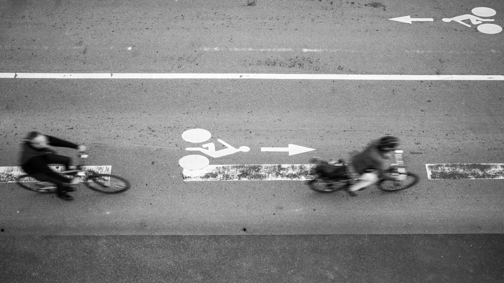

Photographies
↓À propos
J’ai commencé à photographier à douze ans, en 1976, avec l’argentique. Autodidacte, j’ai appris la photographie en la pratiquant, et surtout en regardant.
Je m’intéresse aux choses ordinaires, aux lignes, aux espaces et aux présences discrètes. À ce qui organise une image sans nécessairement constituer un sujet.
Je travaille principalement en noir et blanc, mais la couleur s’impose parfois lorsqu’elle appartient à l’image plutôt qu’au décor.
Ma photographie peut être immédiate, dans la rue, ou beaucoup plus lente face à un paysage. Dans les deux cas, j’essaie d’abord de regarder, puis d’organiser l’image.
Je trouve que tout peut être beau à photographier. Il faut savoir le regarder et organiser l’image pour le montrer.
Pour aller un peu plus loin, j’ai répondu à un entretien de Street Photography France sur ma manière de photographier.